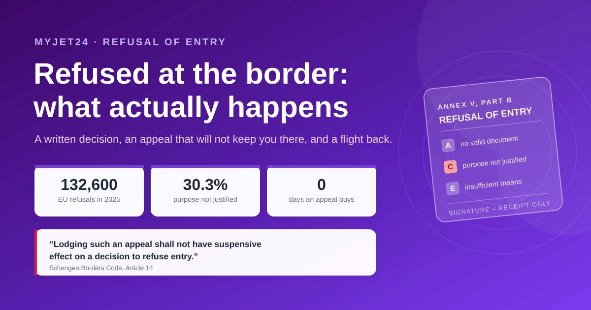
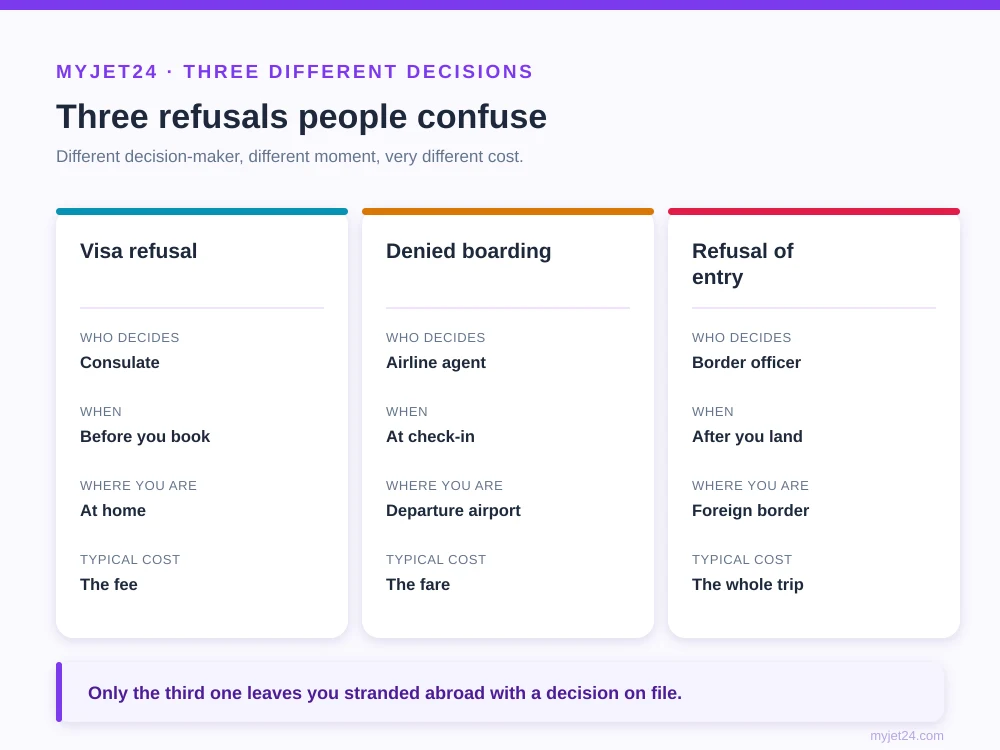
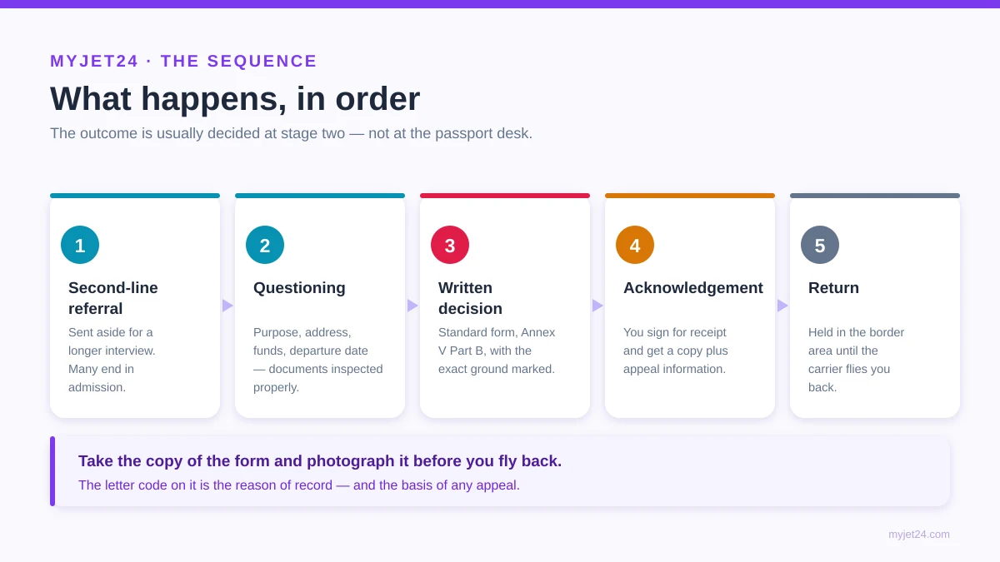
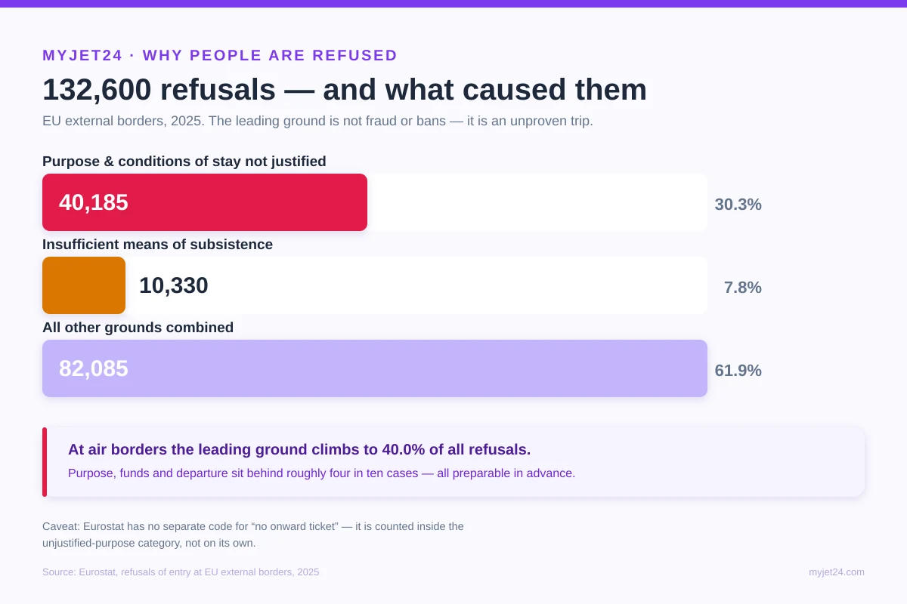

Last updated: 11 August 2026 · Reading time: 14 min · Author: Joshua White, Immigration Policy Writer at MyJet24 · Reviewed by: James Mitchell

TL;DR — Key Facts
- Refusal of entry is a formal written decision, not an opinion. The Schengen Borders Code requires it to be issued "by a substantiated decision stating the precise reasons," on the standard form in Annex V, Part B.
- You have a right of appeal — but it does not keep you in the country. Article 14 is explicit: "Lodging such an appeal shall not have suspensive effect on a decision to refuse entry." You leave first and argue afterwards.
- The airline usually flies you back, not you. Under EU carrier obligations, the carrier that brought you is required to take you back — which is precisely why check-in staff screen documents so carefully.
- The biggest single reason is not fraud or bans. In 2025, 40,185 of 132,600 EU refusals — 30.3% — were for "purpose and conditions of stay not justified." At air borders that reason drove 40.0%.
- Refusal of entry is not a visa refusal and not a denied boarding. Three different decisions, three different decision-makers, three different consequences — and confusing them is why most advice online is wrong.
- A refusal is usually not an automatic ban. It is recorded, and it will be visible next time, but a single refusal at the border is a separate thing from an entry ban.
If you are refused entry at a border, an officer issues a written, substantiated decision on a standard form stating the exact legal ground, you sign to acknowledge receipt, and you are returned — usually on the airline that carried you, at the carrier's cost. You keep a right of appeal, but the appeal has no suspensive effect, so it does not let you stay while it is decided. In the EU in 2025 there were 132,600 such refusals, most commonly because the purpose and conditions of the stay were not justified.
The document that answers the question behind 3 in 10 refusals.
In this guide
- What refusal of entry actually is
- The three refusals people confuse
- What happens, in order
- The form, and whether to sign it
- Your right of appeal — and its limit
- Who pays for the flight back
- Why people are actually refused
- What it means for future travel
- How to not be in this position
- Frequently asked questions
- The bottom line
What refusal of entry actually is
Refusal of entry is a formal administrative decision by a border authority that you may not enter the country, taken after you have already arrived. It is not a border officer's mood, and it is not informal — in the Schengen area it is governed by Article 14 of the Schengen Borders Code, which states that "entry may only be refused by a substantiated decision stating the precise reasons for the refusal."
Two features make it different from every other travel setback. First, it happens after you have flown, which means the costs are already sunk and you are in a place where you have no right to remain. Second, it is a documented legal act with a named ground, a written form and an appeal route — which also means it leaves a record. The officer is not improvising; they are selecting a specific reason from a defined list and recording it against your identity.
Key takeaway: treat a refusal as a legal decision, not an argument you lost. What matters from the first minute is what is written on the form, because that text — not the conversation — is what follows you and what any later appeal turns on.
The three refusals people confuse
Most bad advice on this subject comes from mixing up three separate decisions made by three different parties at three different moments. Getting them apart is the fastest way to understand your own situation.

| Visa refusal | Denied boarding | Refusal of entry | |
|---|---|---|---|
| Who decides | Consulate | Airline agent | Border officer |
| When | Before you book | At check-in | After you land |
| Where you are | Home | Departure airport | Foreign border |
| Written decision | Yes | No | Yes — standard form |
| Typical cost | The fee | The fare | The whole trip |
| Leaves a record | Yes | Rarely | Yes |
Key takeaway: a denied boarding is expensive and annoying; a refusal of entry is expensive and on file. If an airline stops you at check-in, that is in one sense the cheaper outcome — the mechanics of that decision are covered in our guide to boarding denials over onward travel, and the consular side in what happens after a visa refusal.
What happens, in order
The process follows a fixed sequence, and knowing it removes most of the panic. From the moment an officer refers you onward, the steps are procedural rather than adversarial.

- Referral to second-line checks. The primary officer stops the routine check and sends you to a separate area for a longer interview. This on its own is not a refusal — a large share of second-line referrals end in admission.
- Questioning and document review. You are asked about the purpose of your stay, where you will be, how it is funded and when you leave. Documents are inspected properly rather than glanced at.
- The decision. If entry is refused, an authorised officer issues the substantiated written decision. In the Schengen area this is the standard form in Annex V, Part B, with the specific ground marked.
- Acknowledgement. You are asked to sign that you received the form, and you are given a copy along with written information on the national appeal procedure.
- Return. You are held in the border area, not admitted, until a departure is arranged — normally the next available service on the carrier that brought you.
Key takeaway: the outcome is usually decided at step two, not step one. Being sent to second-line checks is a request for a better explanation, so the practical priority is to answer clearly and produce documents that corroborate what you say, not to protest the referral itself.
The form, and whether to sign it
The standard refusal form is the legal centre of the whole event. In the Schengen area, Article 14 requires that the substantiated decision "shall be given by means of a standard form, as set out in Annex V, Part B, filled in by the authority empowered by national law to refuse entry."
The form names the exact ground, marked by a letter — no valid document, no valid visa, no justification of the purpose and conditions of the stay, insufficient means of subsistence, an alert in the system, and so on. That letter matters more than anything said aloud, because it is the reason of record. Signing the form acknowledges that you received it; it is not an admission that the decision is correct. Refusing to sign generally does not stop the refusal — the officer notes the refusal to sign and the decision stands — while leaving you without a clean copy of the document you would need to appeal.
"Entry may only be refused by a substantiated decision stating the precise reasons for the refusal."
— Regulation (EU) 2016/399 (Schengen Borders Code), Article 14
Key takeaway: take the copy, photograph it before you board the return flight, and note the letter code. In our experience helping travellers reconstruct what happened, the people who kept the form have a case to discuss and the people who did not are relying on memory against a written record.
Your right of appeal — and its limit
You have a right of appeal against a refusal of entry, and it exists regardless of nationality. Article 14 states plainly: "Persons refused entry shall have the right to appeal," conducted in accordance with national law, with written information on the procedure provided to you.
The decisive qualification is in the next sentence, and it is the detail most explanations omit: "Lodging such an appeal shall not have suspensive effect on a decision to refuse entry." In plain terms, appealing does not pause the refusal and does not let you stay — you are returned either way, and the appeal proceeds after you have left. Where an appeal succeeds, the remedy is corrective rather than restorative: the traveller "shall … be entitled to correction of the cancelled entry stamp." That fixes the record. It does not refund the trip.
Key takeaway: appeal to clean your record, not to rescue the trip. Because the appeal runs under the national law of the state that refused you, the realistic first step is written information the officer must give you, plus the form itself — which is another reason to leave with a copy in hand.
A verifiable onward reservation with a live PNR via MyJet24 Premium ($7.90), ready in about 30 seconds.
Who pays for the flight back
In most cases the airline that carried you is responsible for taking you back, not you. EU carrier obligations require the transport operator that brought an inadmissible passenger to return them — to the country they came from, to the state that issued their travel document, or to any third country where they are guaranteed admission.
This single rule explains a great deal of behaviour that otherwise looks arbitrary. It is why check-in agents scrutinise documents, why budget carriers are often the strictest, and why the airline — not the border — is the first party with a financial reason to stop you. The practical caveat is that "the carrier pays for the flight" is not the same as "this costs you nothing": your onward arrangements, accommodation and any onward tickets are gone, and some carriers pursue costs afterwards depending on the fare conditions and jurisdiction. The mechanics of that pre-departure screening are covered in our explainer on how the airline document check works.
Key takeaway: the return seat is normally the carrier's problem; everything else is yours. That asymmetry is exactly why the cheapest place to solve a document problem is before check-in, not at the border.
Why people are actually refused
The dominant reason for refusal is not tampering, criminality or bans — it is failing to justify the trip. The EU's own statistics make this unusually clear, and they contradict the impression left by most online discussion of the topic.

The numbers worth remembering. According to Eurostat, 132,600 travellers were refused entry at EU external borders in 2025. The single largest ground — 40,185 cases, 30.3% — was "purpose and conditions of stay not justified", and at air borders that ground accounted for 40.0% of all refusals. A further 10,330 refusals (7.8%) were for insufficient means of subsistence. Read together, roughly four in ten refusals turn on two questions a traveller can prepare for in advance: why are you here, and how are you leaving. An honest caveat: Eurostat has no separate code for "no onward ticket" — it sits inside the unjustified-purpose category rather than being counted on its own.
The two leading grounds share a quality worth noticing: neither is about who you are. They are about what you could demonstrate at the counter. A traveller with a clean record, a valid passport and the right permission is still refused if the account of the trip does not hold together — no address, no dates, no return, vague answers about funding. Our guides to how much money you must show and the six ways to evidence onward travel cover the two halves of that test directly.
Key takeaway: most refusals are evidential, not disciplinary. That is good news, because evidence is the one part of a border encounter you can fully prepare before leaving home.
What it means for future travel
A refusal of entry is recorded, and it is visible to authorities on later crossings — but a single refusal is not an entry ban. The two are separate legal instruments, and conflating them is the most common error in forum advice on this subject.
A refusal records that on a given date you were not admitted, with a stated ground. An entry ban is a distinct decision, typically arising from something more serious — an overstay, a removal, a security ground — and it carries a defined duration. Practically, the consequence of a refusal is heightened scrutiny rather than automatic exclusion: expect questions on the next crossing, and expect to answer them with better documentation than last time. Where a refusal followed an overstay, the separate rules on that are set out in our guide to overstay penalties and bans, and the counting rules behind many accidental overstays in the 90/180-day guide.
A refusal is a fact on your record, not a verdict on your future travel. What changes is the standard of proof you will be held to next time — which means the fix is documentary, not diplomatic.
Key takeaway: do not treat a refusal as permanent exclusion, and do not treat it as nothing. Travel again with the exact gap that caused it closed — if the ground was unjustified purpose, that means an itinerary, accommodation and a departure booking that corroborate each other.
How to not be in this position
Because the two leading grounds are evidential, the countermeasure is a document set rather than a strategy. The aim is that every answer you give at the counter can be corroborated by something in your bag within seconds.
Carry proof of where you are staying, evidence of funds appropriate to the destination and length of stay, and a booking that shows how and when you leave. Keep them in original form and reachable without airport wi-fi. Make sure they agree with one another — a hotel booked to the 14th and a flight out on the 20th invites exactly the question you do not want. And know which permission you actually hold, because the officer's expectations differ sharply between a visa holder, an ETA holder and a visa-free arrival, a distinction our guide to the four entry-permission types sets out.
Key takeaway: consistency beats volume. Three documents that tell one coherent story do more at a border than a folder of unrelated paperwork, because the officer is testing whether your account holds together, not counting pages.
Frequently asked questions
Is refusal of entry the same as deportation?
No. Refusal of entry means you were never formally admitted and are returned from the border. Deportation or removal applies to someone already inside the country who is then required to leave, and it carries heavier consequences including, in many cases, a formal re-entry ban. The two are separate procedures under separate rules.
Should I sign the refusal form?
Signing confirms you received the document, not that you agree with it. Declining to sign does not reverse or delay the decision — the officer records that you refused — and it can leave you without a clear copy of the form you would need for an appeal. Take the copy, keep it, and photograph it before you fly back.
Can I appeal and stay while it is decided?
No. The right of appeal exists, but the Schengen Borders Code states that lodging an appeal has no suspensive effect on the refusal. You are returned regardless, and the appeal continues after you have left. If it succeeds, the remedy is correction of the cancelled entry stamp rather than compensation.
Will a refusal show up the next time I travel?
Yes, it is recorded and visible to border authorities on later crossings. In practice that means more questions and closer document checks rather than automatic exclusion. Travelling again with the specific gap closed — better evidence of purpose, funds and departure — is what changes the outcome.
Can I just fly into a different Schengen country instead?
That is a poor plan. A refusal recorded by one member state is visible to the others, and arriving shortly afterwards at a different external border with the same unresolved gap invites the same result plus questions about the earlier refusal. Fix the underlying evidence problem before travelling again.
Do I get my money back for the trip?
Generally not. The carrier is responsible for returning you, but your fare, accommodation, onward transport and any prepaid arrangements are your loss. Standard travel insurance rarely covers a refusal of entry, since it stems from your own documentation rather than an insured event — check the policy wording before assuming otherwise.
How long am I held at the border?
Until a return departure can be arranged, which in practice usually means the next available service on the carrier that brought you — hours rather than days at a well-connected airport. You are kept in the border or transit area rather than admitted, and conditions and time limits are governed by the national law of the state concerned.
Can I be refused even with a valid visa?
Yes. A visa authorises you to travel to the border and request entry; it does not guarantee admission. Border officers verify at arrival that the conditions are still met, including purpose, funds and duration, and can refuse if they are not. The same applies to an ETA or visa-free status.
Does being sent to a second interview mean I will be refused?
No. Second-line referral is a request for more information, and many referrals end in admission once the traveller explains their trip and produces supporting documents. It is the point at which corroborating paperwork matters most, which is why it should be reachable rather than buried in checked baggage.
Is an onward ticket a legal requirement everywhere?
No, and it is worth being precise about this. The Schengen Borders Code lists a "return or round-trip ticket" among the supporting documents an officer may ask for, and many countries apply their own rules, but requirements vary by destination and nationality. It is evidence that helps answer the most common refusal ground, not a universal legal obligation.
The bottom line
A refusal of entry is a written decision with a named ground, an appeal you can lodge but that will not keep you in the country, and a return flight the airline usually has to provide. Strip away the drama and what remains is a documentation test conducted at the worst possible moment — after the flight, in a country you have no right to be in, with no time to fetch anything you left at home.
The encouraging part is what the numbers show. The leading grounds are not about character or history; they are about whether your account of the trip is corroborated. Purpose, funds, departure — three questions, all answerable in advance, together behind roughly four in ten refusals. Book the accommodation, know your numbers, and hold a verifiable onward booking (MyJet24 Premium, $7.90) that matches the story you will tell. The officer's job then becomes a formality rather than an investigation.
A real reservation with a live PNR via Premium ($7.90) — the evidence the biggest refusal ground asks for.
Joshua White — Immigration Policy Writer, MyJet24
Joshua tracks entry-authorisation and border-control policy across 60+ countries for MyJet24. Methodology note: the procedural rules quoted here are taken verbatim from Article 14 of Regulation (EU) 2016/399 as published, not from secondary summaries, and the refusal statistics come from Eurostat's 2025 dataset. Where a rule is specific to the Schengen area it is labelled as such — other jurisdictions run their own refusal procedures with different appeal rights. Reviewed on 11 August 2026 by James Mitchell, Travel Documentation Writer at MyJet24.
Sources
- Regulation (EU) 2016/399 (Schengen Borders Code), Article 14 — refusal of entry (substantiated decision; standard form Annex V Part B; right of appeal; no suspensive effect)
- Regulation (EU) 2016/399, Annex I — supporting documents incl. "a return or round-trip ticket"
- Eurostat — Refusals of entry at EU external borders, 2025 (132,600 refusals; 40,185 for unjustified purpose; 10,330 for insufficient means)
- Regulation (EU) 2016/399, Annex V — the standard refusal-of-entry form and procedure
This guide explains refusal of entry as of 11 August 2026, drawing on Regulation (EU) 2016/399 and Eurostat statistics. The procedural rules described are Schengen rules; other countries operate their own refusal, detention and appeal procedures, and national implementations vary within the EU. Individual circumstances differ and this article is informational, not legal or immigration advice. If you have been refused entry and intend to appeal, seek qualified legal advice in the state that issued the decision.